Abfrageergebnisse nutzen
Hat eine Abfrage in Ihren Dokumenten etwas Brauchbares gefunden, möchten Sie sie vielleicht in eine Lens umwandeln, die ihre Treffer annotiert, wann immer Sie ein Dokument ansehen. Eine Abfrage lässt sich auch als eigener Analysator sichern, der bei der Indizierung läuft. Findet eine Abfrage Dokumente in Ihrem Projekt, kann aus ihr ein intelligentes Set werden. Über das Menü Aktionen arbeiten Sie direkt mit Ihren Ergebnissen (Sie kodieren damit unter anderem Textstellen, fassen die Dokumente zu einem Set zusammen, versehen Treffer mit Lesezeichen, frieren eine Wortliste ein oder nehmen Wörter in ein Wörterbuch auf).
Dieses Kapitel setzt voraus, dass Sie Abfragen erstellen und ausführen können; beides behandeln Kapitel 15, Eine Abfrage erstellen und Kapitel 16, Abfrageergebnisse und Statistik. Die Beispiele beziehen sich auf „Klimadebatte“, das Beispielprojekt, das Sie mit Ablage ▸ Importieren ▸ Beispielprojekt Ihrer Bibliothek hinzufügen. „Klimadebatte“ enthält zwei gesicherte Abfragen mit den Namen „Dringlichkeit im Gespräch“ und „Schlüsselwörter: Aktivisten“. Alle anderen Abfragen in diesem Kapitel lassen sich anhand der Beschreibungen weiter unten nachbauen.
Konzepte und Grundbegriffe
In diesem Kapitel ist eine Textstelle jedes Stück Text, das eine Abfrage findet. Textstellen sind zum Beispiel Wörter, Sätze, Kodierungen und Redebeiträge.
Eine Abfrage-Lens ist eine gesicherte Abfrage, die zusätzlich im Lens-Menü der Leseansicht erscheint (siehe Kapitel 6, Lenses). Sobald Sie sie aktivieren, führt LemmaLoom die Abfrage auf dem aktuellen Dokument aus und annotiert die Treffer so, wie Sie es eingestellt haben. Das geschieht ähnlich wie bei den eingebauten Lenses, die Wortklassen und Verneinungen annotieren. Wenn Sie eine gesicherte Abfrage bearbeiten und sichern, wird auch ihre Lens automatisch aktualisiert.
Ein erzeugter Analysator ist ein eigener Analysator, der aus einer Abfrage entsteht. Er verwendet JavaScript, das LemmaLoom für ihn erzeugt, ähnlich den Skripten, die Sie unter Fenster ▸ Analysatoren entwickeln. Er läuft während der Indizierung automatisch in allen Projekten (siehe Kapitel 21, Analyse und Indizierung). Die Befunde eines Analysators sind die Textstücke, die er annotiert; sie werden mit jedem Dokument gespeichert, auf dem er läuft. Im Grunde ist ein erzeugter Analysator eine Momentaufnahme der Abfrage.
Die Übereinstimmungsprüfung führt eine Abfrage und einen erzeugten Analysator auf einigen Dokumenten nebeneinander aus und vergleicht ihre Ergebnisse. Sichern lässt sich ein erzeugter Analysator nur, wenn beide genau dieselben Textstellen finden.
Ein verknüpfter Analysator ist ein erzeugter Analysator, der weiß, aus welcher gesicherten Abfrage er stammt. Ändern und sichern Sie diese Abfrage später, zeigt der Analysator Veraltet.
Eine eingefrorene Liste ist eine feste Liste von Wörtern aus einer Abfrage mit Kollokationen oder Schlüsselwörter. Kollokationen bringen ihre Werte mit (also Assoziationswerte), Schlüsselwörter ihren Log-Likelihood-Wert. Diese Werte werden zu Gewichten, die jedem Eintrag der eingefrorenen Liste zugeordnet sind. Eine Abfrage kann in jedem Geltungsbereich nach den Wörtern einer eingefrorenen Liste suchen.
Lens, Analysator oder intelligentes Set
Meist probieren Sie eine Abfrage an mehreren Dokumenten aus, bis das Ergebnis gut genug ist, um sie zu behalten. Wie Sie sie dann aufbewahren, hängt davon ab, wofür die Abfrage gedacht ist. In der Regel beginnen Sie am besten mit einer Lens, denn sie zeigt die Treffer direkt beim Lesen und übernimmt dabei jede gesicherte Änderung. Lenses eignen sich für Muster, die Sie weiter verfeinern möchten, und für Muster, die Sie beim genauen Lesen im Blick haben wollen.
Analysatoren eignen sich eher für Muster, die feststehen, denn sie gelten in jedem Projekt und speichern ihre Ergebnisse mit jedem Dokument. Auf diese gespeicherten Ergebnisse können andere Abfragen zugreifen, etwa um sie zu zählen, zwischen Dokumentgruppen zu vergleichen oder Treffer mit Codes in Beziehung zu setzen. Analysatoren können nur Wörter, Sätze und grammatische Strukturen verwenden, und sind sie einmal aus einer Fassung einer Abfrage entstanden, behalten sie diese Fassung, bis Sie sie aktualisieren.
Intelligente Sets sind eine dritte Möglichkeit, ein Abfragemuster aufzubewahren. Hier wählen Abfragen Dokumente nach bestimmten Attributen und Merkmalen aus statt nach Mustern im Inhalt. Ein intelligentes Set könnte also zum Beispiel die Texte der Aktivisten mit großer Leserschaft enthalten. Es erscheint in der Seitenleiste und lässt sich wie jedes andere Set verwenden.
Die drei Möglichkeiten unterscheiden sich darin, wo sie gelten und wie sie Änderungen der Abfrage folgen:
| Abfrage-Lens | Erzeugter Analysator | Intelligentes Set | |
|---|---|---|---|
| Entsteht aus | einer Abfrage, die Textstellen auflistet | einer Abfrage, die Textstellen auflistet und nur Wörter, Sätze und deren Grammatik prüft | einer Abfrage, die Dokumente nach ihren Eigenschaften auflistet |
| Was Sie erhalten | Farben und eine Legende in der Leseansicht | Farben in der Leseansicht, dazu gespeicherte Befunde, die andere Abfragen durchsuchen können | ein Set in der Seitenleiste, dessen Mitglieder aus seinen Bedingungen ermittelt werden |
| Wo es gilt | überall, wo die gesicherte Abfrage verfügbar ist (ein Dokument, ein Set, ein Projekt oder alle Projekte) | jedes Dokument in seinen Sprachen, in allen Projekten | sein Projekt |
| Wann LemmaLoom rechnet | jedes Mal, wenn Sie die Lens in einem Dokument aktivieren | einmal pro Dokument, während der Indizierung | jedes Mal, wenn das Set verwendet wird |
| Nach einer Änderung der Abfrage | folgt der gesicherten Abfrage | zeigt Veraltet, bis Sie ihn aktualisieren | behält eine eigene Kopie der Bedingungen |
Anders als diese drei wirkt das Menü Aktionen ein einziges Mal auf Ihre Ergebnisse und legt aus ihnen Sets, Lesezeichen und Kodierungen an. Von da an sind diese unabhängig von Ihrer Abfrage.
Wo die Menüs Sichern und Aktionen liegen
Über dem Abfrageeditor hat jede Abfrage eine Kopfzeile. Sie erscheint überall, wo Sie mit der Abfrage arbeiten (in der Facette Abfrage eines Dokuments, in den Ansichten Abfragen von Sets und des Projekts und im eigenständigen Abfragen-Fenster). Die hier besprochenen Befehle stehen in zwei ihrer Menüs. Mit Sichern (dem Symbol mit einem Quadrat, in das ein Pfeil zeigt) sichern Sie Abfragen und machen aus ihnen Lenses oder Analysatoren. Aktionen (das Symbol mit drei Punkten im Kreis, ⋯) wirkt auf die Ergebnisse, die die Abfrage gerade geliefert hat. Passen nicht alle Schaltflächen in die erste Zeile, rücken beide Menüs in eine zweite Zeile und stehen dort am rechten Ende. Andernfalls stehen sie rechts neben Abfrage ausführen (der Schaltfläche mit dem Dreieck). Die übrigen Teile der Kopfzeile erklärt Der Abfrageeditor in Kapitel 15, Eine Abfrage erstellen.
Das Menü Sichern enthält Sichern, Sichern unter … und bei bereits gesicherten Abfragen Umbenennen …. Weiter unten folgen nach einer Trennlinie Als Lens sichern … (oder Lens entfernen bei Abfragen, die bereits Lenses sind) und Als Analysator sichern …. Bei einer gesicherten Abfrage steht darunter außerdem Abfrage löschen. Denselben Befehl finden Sie auch im Kontextmenü gesicherter Abfragen in der linken Spalte der Ansichten Abfragen und des Abfragen-Fensters. Abfrage löschen löscht die Abfrage sofort. Ist die Abfrage gerade geladen, beginnt der Editor wieder mit einer leeren Abfrage namens Neue Abfrage. Bearbeiten ▸ Abfrage löschen widerrufen holt die Abfrage zurück.
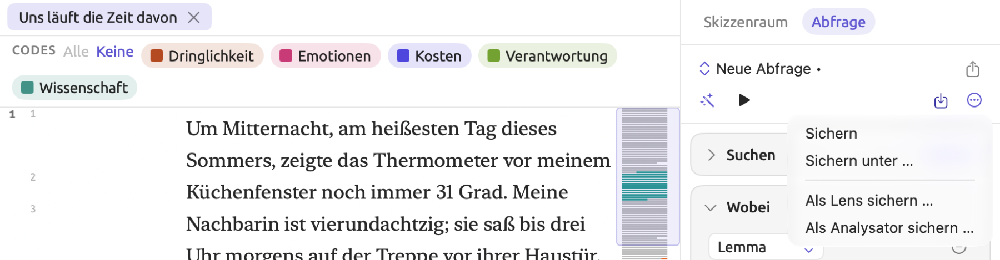
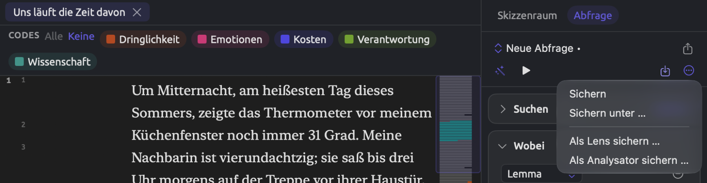
Eine Abfrage als Lens sichern
Soll eine Abfrage beim Lesen mitlaufen, ist eine Lens das Richtige. In „Klimadebatte“ ist die Abfrage „Dringlichkeit im Gespräch“ als Lens gesichert. Diese Lens annotiert Sätze, die eines von fünf bestimmten Wörtern enthalten (dringend, Dringlichkeit, Krise, Notfall, Frist), sofern sie eine Textstelle überlappen, die mit „Dringlichkeit“ oder einem seiner Untercodes kodiert ist. Die Abfrage hinter dieser Lens erklärt Eine erste Abfrage in Kapitel 15, Eine Abfrage erstellen ausführlich; sie findet Sätze über einen Vergleich mit dem Lemma und hat eine Kontextzeile für Kodierungen. Die Bedingung Anzeigen steht auf Liste.
So sichern Sie eine Abfrage als Lens:
- Führen Sie die Abfrage aus und sehen Sie sich einige ihrer Treffer an. In der Facette Abfrage eines Dokuments klicken Sie auf einen Treffer, damit die Leseansicht zu ihm scrollt. In einer Ansicht Abfragen oder im Abfragen-Fenster doppelklicken Sie auf einen Treffer, oder Sie klicken ihn mit der rechten Maustaste an und wählen Zur Quelle springen.
- Vergewissern Sie sich, dass Anzeigen auf Liste steht.
- Öffnen Sie das Menü Sichern und wählen Sie Als Lens sichern ….
- Geben Sie im Dialog Als Lens sichern unter Name einen Namen ein. Unter diesem Namen erscheint die Lens im Lens-Menü.
- Wählen Sie unter Verfügbar in, wo die Lens angeboten werden soll (siehe die Tabelle unten).
- Klicken Sie auf Sichern.
Sobald die Abfrage gesichert ist, wird sie zur Lens. Im Menü mit dem Namen der Abfrage und in der linken Spalte einer Ansicht Abfragen oder des Abfragen-Fensters erkennen Sie jede Lens an einer Brille neben dem Namen der Abfrage.
Bei einer bereits gesicherten Abfrage öffnet Als Lens sichern … keinen Dialog: Der Befehl sichert die Abfrage in ihrem aktuellen Zustand, einschließlich ungesicherter Änderungen, und macht sie sofort zur Lens.
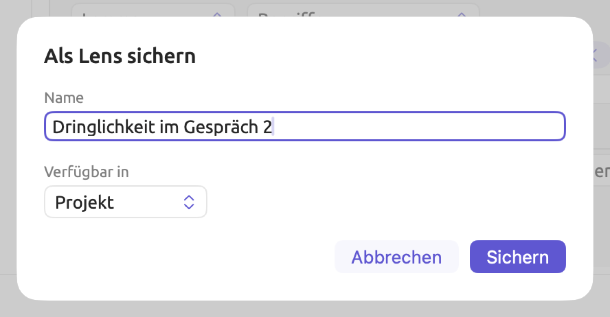
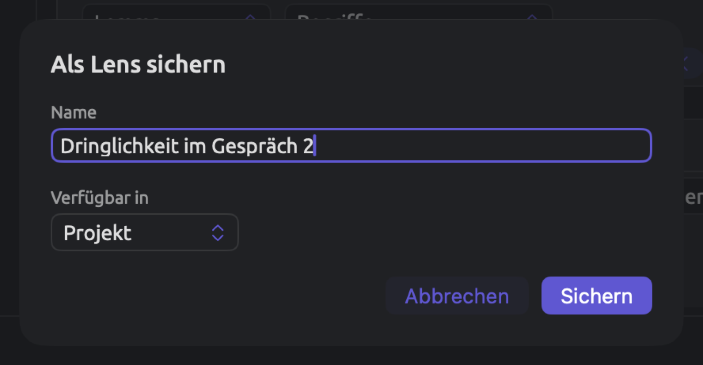
Verfügbar in legt fest, welche Dokumente die Lens anbieten. Wählen Sie dort den kleinsten Bereich, in den Ihre Dokumente fallen; so bleiben die Lens-Menüs der anderen Dokumente kurz. Welche Möglichkeiten der Dialog anbietet, hängt davon ab, wo Sie arbeiten; vorausgewählt ist immer die erste.
| Verfügbar in | Angeboten beim Sichern aus | Die Lens erscheint in |
|---|---|---|
| Dokument | der Facette Abfrage eines Dokuments | nur diesem Dokument |
| Set | der Ansicht Abfragen eines Sets oder dem Abfragen-Fenster mit einem Set als Geltungsbereich | jedem Dokument des Sets und seinen Übersetzungen |
| Projekt | einem Dokument, einem Set oder dem Projekt | jedem Dokument des Projekts |
| Alle Projekte | überall | jedem Dokument in jedem Projekt |
Im Abfragen-Fenster mit Alle Projekte als Geltungsbereich gibt es nur eine Möglichkeit, Alle Projekte.
Eine Abfrage-Lens in der Leseansicht verwenden
Abfrage-Lenses aktivieren Sie wie andere Lenses auch:
- Öffnen Sie ein Dokument, in dem die Lens verfügbar ist.
- Klicken Sie in der Titelleiste oben in der Leseansicht auf das Lens-Menü. Abfrage-Lenses stehen mit ihrem Namen im unteren Teil des Menüs, nach Lesezeichen, Codes und Ihren Wörterbüchern.
- Wählen Sie die Lens. Ein Häkchen zeigt, dass sie aktiviert ist, und ihre Lenslets erscheinen in der Legende.
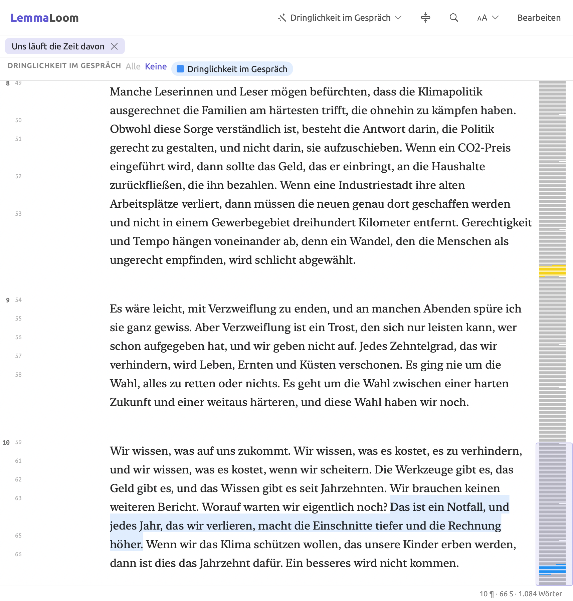
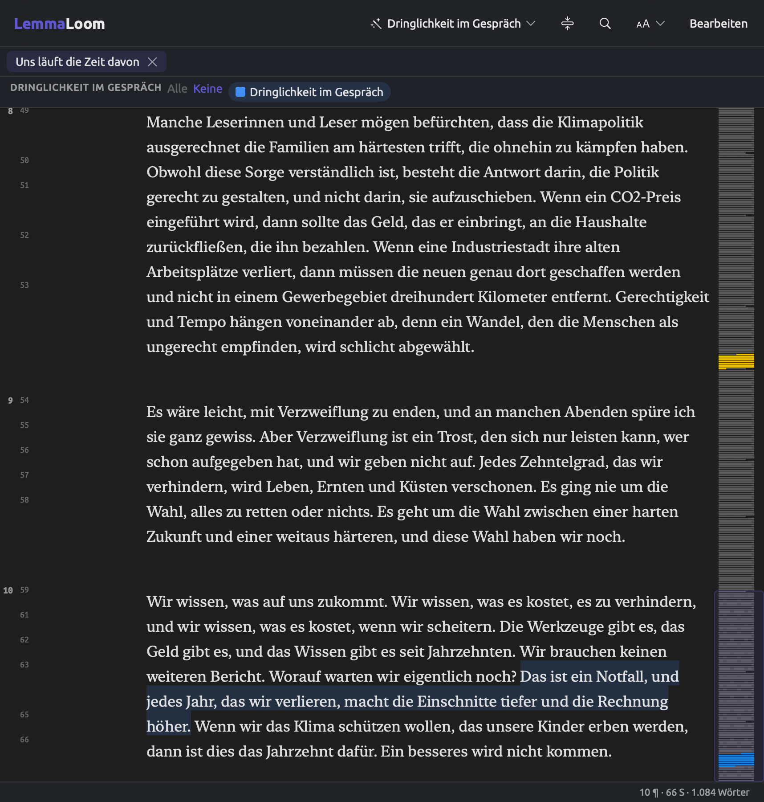
Nach diesen Regeln entstehen aus Ihrer Abfrage Lenslets:
- Eine Abfrage ohne Kategorien ergibt ein einziges Lenslet. Es trägt den Namen, den Sie der Abfrage gegeben haben.
- Eine Abfrage mit Kategorien ergibt ein Lenslet pro Kategorie, mit der Farbe und dem Stil, die Sie in der Bedingung Kategorien gewählt haben. Annotiert werden nur Treffer, die in eine Kategorie fallen.
- Eine Abfrage mit Färben nach legt für jeden Wert eines Feldes eine eigene Kategorie an (siehe Kategorien und Färben nach in Kapitel 15, Eine Abfrage erstellen). Es entstehen so viele Lenslets, wie verschiedene Werte im geöffneten Dokument vorkommen, insgesamt aber höchstens 16. Die Lenslets sind alphabetisch sortiert, und die Farben werden in dieser Reihenfolge vergeben. Derselbe Wert kann deshalb in zwei Dokumenten zwei verschiedene Farben erhalten.
Wenn Sie die Lens im aktuellen Dokument aktivieren, führt LemmaLoom die zugrunde liegende Abfrage aus. Erneut läuft sie, sobald Sie die Abfrage ändern und sichern oder umbenennen. Auch wenn sich Kodierungen oder Lesezeichen im Dokument ändern, führt LemmaLoom die Abfrage erneut aus. „Dringlichkeit im Gespräch“ reagiert deshalb sofort auf Ihre Kodierung; die Annotation erscheint in dem Moment, in dem Sie in „Uns läuft die Zeit davon“ den Satz, der mit Eine Frist, die erst abläuft, wenn alle heutigen Amtsträger im Ruhestand sind beginnt, mit dem Code „Fristen“ kodieren.
Um die Lens zu deaktivieren, wählen Sie sie im Lens-Menü erneut, oder Sie wählen Alle deaktivieren, Lenses deaktivieren oder Annotationen deaktivieren; Annotationen deaktivieren deaktiviert zugleich Lesezeichen und Codes sowie die übrigen Abfrage- und Wörterbuch-Lenses.
Soll die Lens gar nicht mehr angeboten werden, laden Sie die Abfrage, die aus den Lens-Menüs verschwinden soll, und wählen in ihrem Menü Sichern den Befehl Lens entfernen. Die Abfrage selbst bleibt erhalten. Wenn Sie dagegen die Abfrage löschen, verschwindet auch die Lens. Bearbeiten ▸ Lens entfernen widerrufen und Bearbeiten ▸ Abfrage löschen widerrufen holen sie zurück.
Bei aktivierter Lens öffnen Dokument ▸ Automatisch kodieren… (⇧⌘A) und der entsprechende Befehl im unteren Teil des Lens-Menüs den Dialog Automatisch kodieren, der jede Textstelle kodiert, die die Lens annotiert. Sind mehrere Abfrage-, Wörterbuch- oder Analysator-Lenses aktiviert, enthält jedes der beiden Menüs mehrere Befehle, einen pro Lens, etwa Mit Dringlichkeit im Gespräch automatisch kodieren…, und ⇧⌘A gehört zum ersten. „Dringlichkeit im Gespräch“ hat zum Beispiel keine Kategorien, deshalb hat ihr Dialog nur eine Zeile namens „Dringlichkeit im Gespräch“. Ausführlicher beschreibt das Automatisch kodieren mit einer Lens in Kapitel 7, Kodieren.
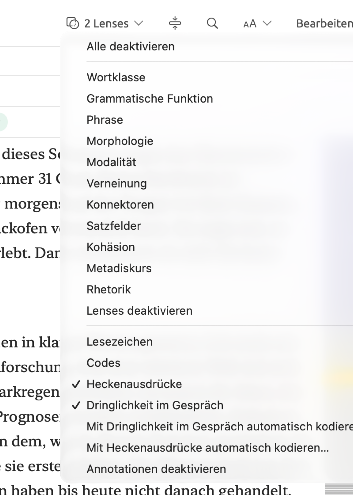
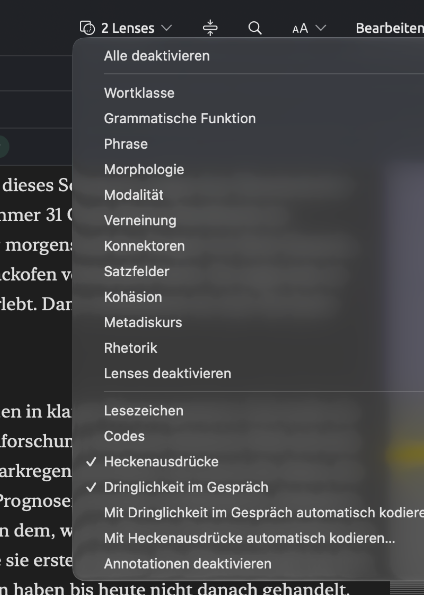
Welche Abfragen Lenses werden können
Eine Lens annotiert Textstücke nur im aktuellen Dokument. Ihre Abfrage muss deshalb eine einfache Liste von Textstellen liefern. Erfüllt sie diese Voraussetzung nicht, ist Als Lens sichern … deaktiviert; halten Sie den Mauszeiger auf den Befehl, um den genauen Grund zu erfahren. Für eine Lens muss eine Abfrage diese Bedingungen erfüllen:
- Anzeigen steht auf Liste;
- Suchen ist auf eine Art von Textstelle eingestellt, nämlich auf Wörter, Mustertreffer, Sätze, Absätze, Texttreffer, Phrasen, Nominalphrasen-Blöcke, Befunde, Kodierungen, Memos, Lesezeichen oder Redebeiträge;
- die Liste ist nach einem beliebigen Kriterium außer Wert sortiert; Wert gibt es bei Abfragen mit einer eingefrorenen Liste (siehe Werte einfrieren weiter unten in diesem Kapitel);
- die Bedingung Kategorien der Abfrage enthält höchstens 16 Kategorien;
- und die Abfrage selbst ist bereit zur Ausführung.
Alle Gründe, aus denen der Befehl nicht verfügbar sein kann, führt Warum ein Befehl nicht verfügbar ist weiter unten in diesem Kapitel auf.
Eine Abfrage in einen Analysator umwandeln
Eigene Analysatoren sind kleine JavaScript-Programme, die für jedes Dokument laufen, während es indiziert wird (siehe Kapitel 20, Eigene Analysatoren). Wenn Sie eine Abfrage mit Als Analysator sichern … als eigenen Analysator sichern, wird der nötige Code für Sie erzeugt, und der entstandene Analysator verhält sich so:
- Er läuft in allen Projekten für jedes Dokument in den gewählten Sprachen, außer für Dokumente, in denen Sie seine Ausgabe in den Dokumenteigenschaften entfernen (siehe Kapitel 21, Analyse und Indizierung).
- Seine Ergebnisse werden einmal pro Dokument berechnet und gespeichert, also nicht bei jedem Aktivieren einer Lens neu ermittelt.
- Er erscheint im Lens-Menü bei den anderen Analysatoren und lässt sich mit Automatisch kodieren… verwenden.
- Seine Ergebnisse lassen sich mit Suchen auf Befunde durchsuchen und stehen so weiteren Abfragen zur Verfügung.
- Sein Quelltext ist unter Fenster ▸ Analysatoren zu sehen, wo Sie ihn lesen, testen und bearbeiten können.
„Dringlichkeit im Gespräch“ lässt sich nicht als eigener Analysator sichern, denn ihr Kontext verwendet Kodierungen, und die stehen während der Indizierung nicht zur Verfügung; Als Analysator sichern … ist deshalb mit dem Grund Verwendet Kodierungen oder Memos deaktiviert. Wie Sie aus einer Abfrage einen eigenen Analysator erzeugen, zeigen die folgenden Beispiele. Grundlage ist die Abfrage „Wörter zur Dringlichkeit“, die in der Ansicht Abfragen des Projekts gesichert ist, mit Verfügbar in auf Projekt. Sie sucht Wörter und hat nur eine Textzeile auf Lemma für Schwelle, kollabieren, zerfallen, Frist, Ziel und Countdown. Zerfallen stammt aus dem Dokument „Uns läuft die Zeit davon“, in dem Eisschilde, Wälder und Meeresströmungen von selbst zu zerfallen beginnen. Ihre Bedingung Kategorien enthält zwei Kategorien. Die Kategorie „Kipppunkte“ hat eine Textzeile auf Lemma für Schwelle, kollabieren und zerfallen, die Kategorie „Fristen“ eine Textzeile auf Lemma für Frist, Ziel und Countdown. Die Kategorien heißen genauso wie die beiden Untercodes von „Dringlichkeit“, damit der Dialog Automatisch kodieren sie zuordnen kann (siehe Automatisch kodieren… weiter unten in diesem Kapitel).
So erzeugen Sie aus einer Abfrage einen Analysator:
- Sichern Sie die Abfrage zuerst, mit Sichern oder Sichern unter … (siehe den Hinweis unten).
- Öffnen Sie das Menü Sichern und wählen Sie Als Analysator sichern ….
- Warten Sie, solange die Zeile Übereinstimmung eine Fortschrittsanzeige zeigt, und prüfen Sie dann den Dialog (siehe unten).
- Ändern Sie bei Bedarf Name oder Sprachen.
- Klicken Sie auf Sichern.
Der Dialog Als Analysator sichern enthält diese Felder:
- Name enthält zu Beginn den Namen der Abfrage.
- Sprachen bietet Englisch, Deutsch und Chinesisch an. Zu Beginn sind die Sprachen der Dokumente ausgewählt, die die Abfrage erfasst, oder Englisch, wenn keine davon zu den dreien gehört. Setzen Sie nur bei den Sprachen ein Häkchen, für die die Abfrage gedacht ist; eine Abfrage nach deutschen Lemmata etwa sollte auf deutschen Dokumenten laufen.
- Legende zeigt jede Kategorie der Abfrage in ihrer Farbe. Hat die Abfrage keine Kategorien, zeigt Legende einen einzigen Eintrag namens Übereinstimmung.
- Quelle enthält das für die Abfrage erzeugte Skript. Sie können den Inhalt dieses Feldes auswählen und kopieren, um ihn anderswo zu verwenden; um das Skript zu bearbeiten, sichern Sie zuerst und wählen dann Fenster ▸ Analysatoren.
- Übereinstimmung zeigt das Ergebnis der Übereinstimmungsprüfung (siehe Die Übereinstimmungsprüfung unten).
- Dokumente zeigt die Zahl der Dokumente in den gewählten Sprachen über alle Ihre Projekte hinweg. Der Analysator wird jedes dieser Dokumente verarbeiten.
Sichern ist deaktiviert, wenn einer der folgenden Fälle vorliegt; halten Sie den Mauszeiger auf Sichern, um mehr zu erfahren:
- Übereinstimmung wird geprüft bedeutet, dass die Übereinstimmungsprüfung gerade läuft.
- Quelle enthält Fehler bedeutet, dass das erzeugte Skript die Anforderungen nicht erfüllt, die jeder Analysator erfüllen muss. Übereinstimmung zeigt dann die Fehlermeldung.
- Befunde stimmen nicht überein bedeutet, dass die Übereinstimmungsprüfung einen Unterschied bei den Befunden festgestellt hat.
- Name ist leer oder Keine Sprache gewählt bedeutet, dass ein Feld noch ausgefüllt werden muss.
Lässt sich die Abfrage nicht als Skript darstellen, erscheint der Grund, und die Schaltfläche Sichern nennt ihn ebenfalls.
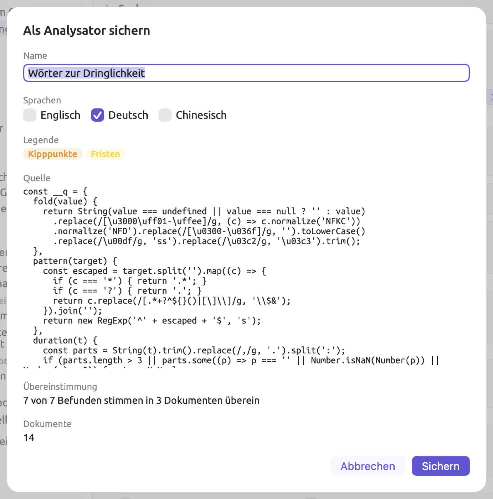
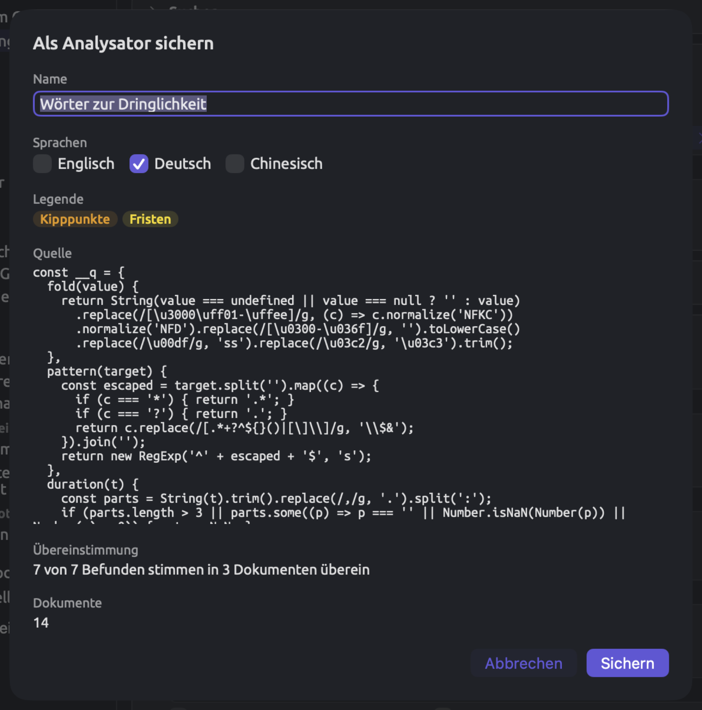
Nach einem Klick auf Sichern steht der Analysator unter Fenster ▸ Analysatoren bereit, und LemmaLoom führt ihn im Hintergrund auf den Dokumenten in seinen Sprachen aus, in allen Projekten. Den Fortschritt verfolgen Sie unter Fenster ▸ Aktivität (⌥⌘0). Wie lange das dauert, hängt von der Zahl der Dokumente und von der Leistung Ihres Mac ab. Bearbeiten ▸ Analysator hinzufügen widerrufen macht den Vorgang rückgängig.
Die Übereinstimmungsprüfung
Das erzeugte Skript findet Textstellen selbstständig und unabhängig von Ihrer Abfrage. Bevor es sich sichern lässt, prüft LemmaLoom deshalb, ob es tatsächlich genau dieselben Textstücke findet wie die Abfrage. Dazu nimmt LemmaLoom höchstens drei indizierte Dokumente aus dem Geltungsbereich der Abfrage und führt auf ihnen sowohl die Abfrage als auch das Skript aus. Anschließend werden die Textstücke verglichen, die Abfrage und Skript jeweils gefunden haben. Zwei Textstücke stimmen überein, wenn sie im selben Satz beim selben Wort beginnen und enden und dieselbe Kategorie haben.
Für „Wörter zur Dringlichkeit“ lautet die Zeile unter Übereinstimmung 7 von 7 Befunden stimmen in 3 Dokumenten überein. Die Angabe 7 von 7 bedeutet, dass Skript und Abfrage vollständig übereinstimmen; jeder Befund, den eines von beiden gefunden hat, findet sich auch beim anderen. Die linke Zahl gibt die Befunde an, die beide gefunden haben, die rechte die Gesamtzahl der Befunde, die die Abfrage, das Skript oder beide gefunden haben. Unterscheiden sich die beiden Zahlen, gibt es Abweichungen, Abfrage und Skript finden also nicht dieselben Textstücke.
Angenommen, die Abfrage findet in den drei Dokumenten 9 Textstücke und das Skript 10 (die Zahlen sind erfunden). Das Skript findet 8 dieser 9 Textstücke, übersieht also eines und findet 2 weitere, die die Abfrage nicht gefunden hat. Gemeinsam finden Abfrage und Skript damit 8 Textstücke. Addiert man die beiden Gesamtzahlen, werden diese gemeinsamen Textstücke doppelt gezählt; die Zahl der Textstücke, die mindestens eines von beiden findet, ist deshalb:
Dabei stehen , und für die Zahl der Befunde, die die Abfrage, das Skript und beide gefunden haben, und für die Gesamtzahl der Befunde, die mindestens eines von beiden gefunden hat. Setzt man die Zahlen aus dem Beispiel ein, ergibt sich , und die Zeile lautet 8 von 11 Befunden stimmen in 3 Dokumenten überein. Das Skript übersieht ein Textstück und findet 2 neue; insgesamt gibt es also 3 Abweichungen.
Bei einer Abweichung können Sie das Skript nicht sichern. Sichern ist deaktiviert, und LemmaLoom meldet Befunde stimmen nicht überein. Behalten Sie die Abfrage in diesem Fall als Lens.
Die Prüfung verwendet den Geltungsbereich Ihrer Abfrage. In der Facette Abfrage eines geöffneten Dokuments ist das nur dieses Dokument. In der Ansicht Abfragen eines Sets oder eines Projekts sind es die ersten drei indizierten Dokumente des Sets oder Projekts. Um Ihr Skript an mehr als einem Dokument zu prüfen, erstellen Sie den Analysator in einer Ansicht Abfragen oder im Abfragen-Fenster.
Gibt es im Geltungsbereich Ihrer Abfrage keine indizierten Dokumente, zeigt LemmaLoom statt der Zahlen die Meldung Keine indizierten Dokumente, und Sichern ist verfügbar. Sobald Dokumente im Geltungsbereich indiziert sind, aktivieren Sie den Analysator im Lens-Menü eines dieser Dokumente und prüfen, ob er genau dieselben Textstellen annotiert wie Ihre Abfrage.
Welche Abfragen Analysatoren werden können
Wie jeder eigene Analysator liest auch ein erzeugter jeweils einen Satz und berücksichtigt dabei dessen Wörter, Phrasen und Nominalgruppen sowie für jedes Wort Lemma, Wortklasse, grammatisches Tag, Morphologie und Dependenzen (siehe Kapitel 21, Analyse und Indizierung). Eine Abfrage kann nur dann ein Analysator werden, wenn diese Angaben allein genügen, um sie auszuführen. Andernfalls ist Als Analysator sichern … deaktiviert, und ein Hinweis nennt den Grund, wenn Sie den Mauszeiger darauf halten.
Damit sich eine Abfrage als Analysator eignet, muss sie:
- sich als Lens eignen (siehe Welche Abfragen Lenses werden können weiter oben in diesem Kapitel);
- Wörter, Mustertreffer, Sätze, Phrasen oder Nominalphrasen-Blöcke suchen;
- in ihren Regeln nur Felder von Wörtern, Sätzen und Phrasen verwenden;
- Text über Wort, Wortform oder Lemma und mit Begriffe oder Wörterbuch vergleichen;
- Beziehungen nur innerhalb eines einzigen Satzes herstellen, über die Relationen Überlappend mit, Innerhalb, Enthält, Gleicher Bereich wie oder Im selben Satz wie und nur zu Wörtern, Sätzen, Phrasen oder Nominalgruppen;
- ohne Zeilen mit Hat und ohne Färben nach auskommen;
- auf die Felder Negator, Im Negationsbereich, Konnektiv, Modalität, Topologisches Feld und Partikel verzichten. Diese Felder sind den eingebauten Lenses der Leseansicht vorbehalten.
Die Abfrage „Wörter zur Dringlichkeit“ erfüllt diese Anforderungen. Sie sucht Wörter und prüft sowohl in ihren Regeln als auch in den Definitionen ihrer Kategorien nur deren Lemmata.
Einen Analysator auf dem Stand seiner Abfrage halten
Ändern und sichern Sie die Abfrage, nachdem Sie den Analysator erstellt haben, arbeitet der Analysator weiter nach der ursprünglichen Abfrage, bis Sie ihn aktualisieren. Ist der Analysator verknüpft (aus einer gesicherten Abfrage entstanden und sein Quelltext seither nicht von Hand geändert), bemerkt LemmaLoom die Abweichung.
Jede Änderung an der gesicherten Abfrage eines verknüpften Analysators versieht seinen Eintrag unter Fenster ▸ Analysatoren mit dem Hinweis Veraltet. Das gilt auch für eine Änderung, die nur die Sortierung der Ergebnisse betrifft und nichts daran ändert, was gefunden wird.
So aktualisieren Sie den Analysator im Fenster Analysatoren:
- Wählen Sie Fenster ▸ Analysatoren.
- Wählen Sie in der Liste links den Analysator aus, der Veraltet zeigt.
- Klicken Sie auf Analysator aktualisieren, links neben Sichern in der Zeile mit Name und Sprachen.
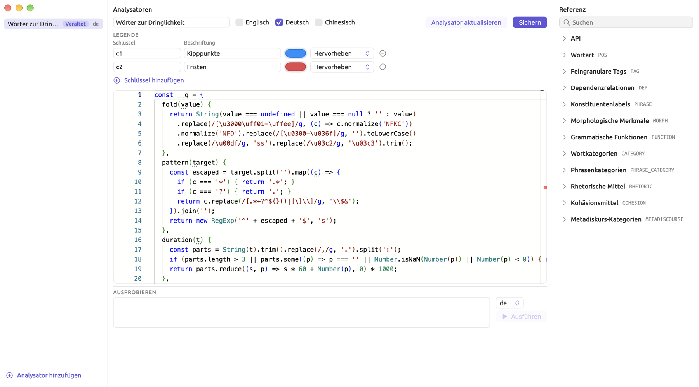
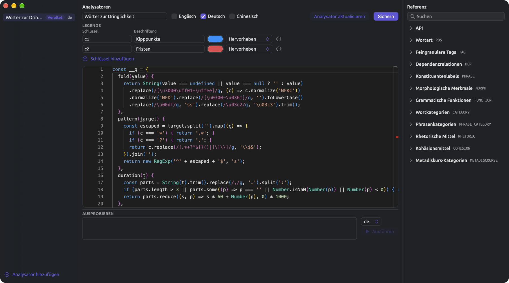
Analysator aktualisieren wandelt die gesicherte Abfrage direkt in ein Analysatorskript um. Name und Sprachen des Analysators bleiben erhalten, Quelltext und Legende werden ersetzt; Änderungen an Beschriftungen oder Farben gehen dabei verloren. Enthält das neue Skript Fehler, meldet LemmaLoom sie direkt unter dem Editor, und der Analysator behält sein altes Skript.
Kann die gesicherte Abfrage kein Analysator mehr werden, ist die Schaltfläche deaktiviert und nennt den Grund. Ändert eine Aktualisierung das Skript, führt LemmaLoom den Analysator erneut auf allen Dokumenten in seinen Sprachen aus. Um die letzte Aktualisierung rückgängig zu machen, wählen Sie Bearbeiten ▸ Analysator aktualisieren widerrufen.
Wenn Sie lieber von der Abfrage aus aktualisieren möchten, wobei zuerst die Übereinstimmungsprüfung läuft, öffnen Sie die gesicherte Abfrage und wählen erneut Als Analysator sichern …. Bei einem verknüpften Analysator heißt der Dialog dann Analysator aktualisieren und zeigt den bisherigen Namen und die Sprachen; beides können Sie ändern. Mit Aktualisieren, das an die Stelle von Sichern tritt, übernehmen Sie die Änderungen, und Bearbeiten ▸ Analysator bearbeiten widerrufen stellt den Zustand vor der Bearbeitung wieder her.
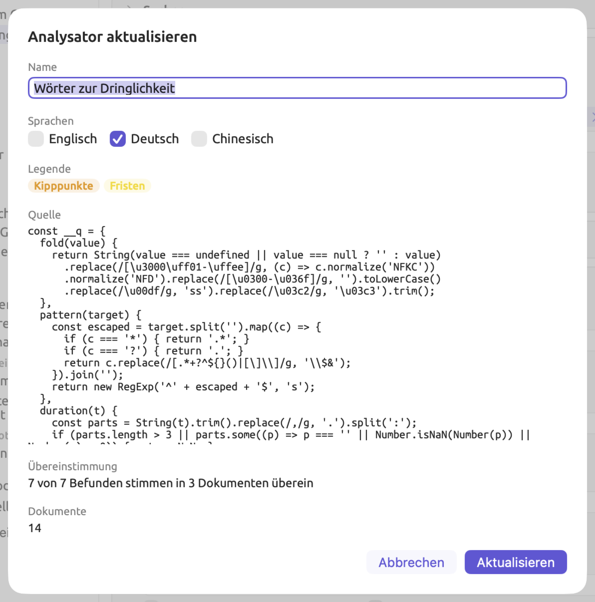
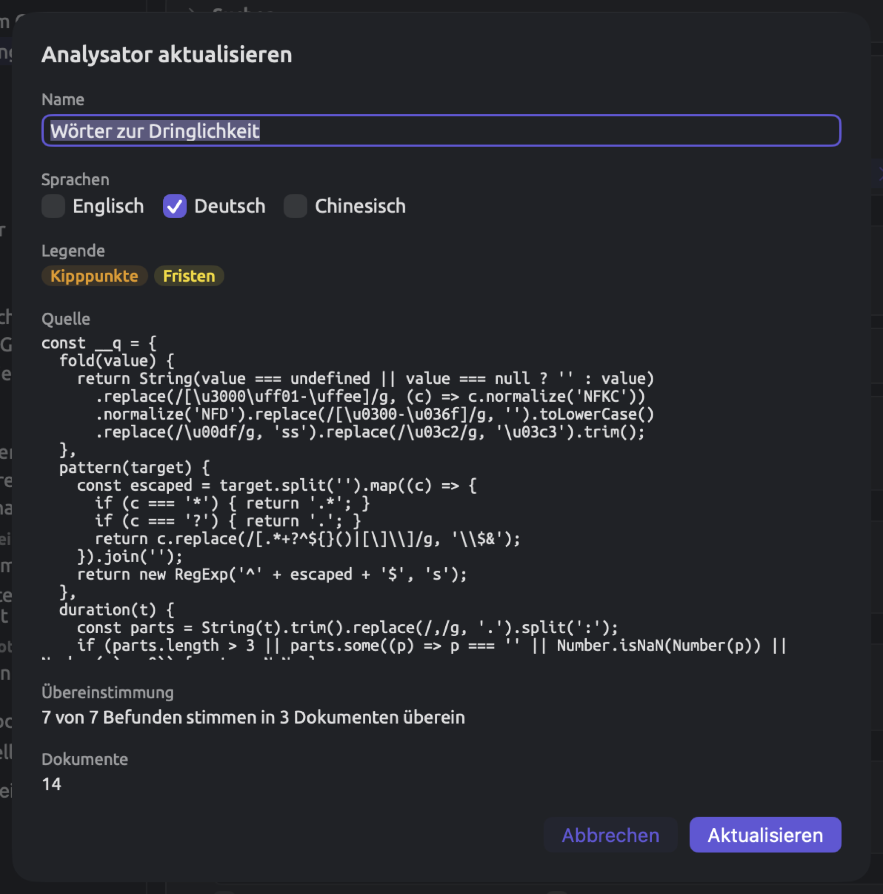
Zwei Dinge lösen die Verknüpfung zwischen gesicherter Abfrage und Analysator:
- Sie ändern den Quelltext unter Fenster ▸ Analysatoren und klicken auf Sichern. Das Skript ist dann unabhängig von der gesicherten Abfrage, und Als Analysator sichern … legt für die Abfrage einen neuen, eigenständigen Analysator an. Bearbeiten ▸ Analysator bearbeiten widerrufen stellt den alten Quelltext und die Verknüpfung wieder her. Ändern Sie nur Name, Sprachen oder Legende, bleibt die Verknüpfung bestehen.
- Sie löschen die Abfrage. Der Analysator arbeitet dann als nicht verknüpfter Analysator weiter.
Eine Dokumentabfrage als intelligentes Set sichern
Ein intelligentes Set sammelt Dokumente über Bedingungen zu Eigenschaften und Attributen und ermittelt seine Mitglieder aus diesen Bedingungen, wann immer es gebraucht wird (siehe Kapitel 8, Sets, Gruppen, Tags und Attribute). Haben Sie bereits eine Abfrage, die Dokumente über solche Regeln auswählt, können Sie sie in ein intelligentes Set umwandeln.
Im Projekt „Klimadebatte“ liefert die Abfrage „Vielgelesene Aktivisten“, gesichert in der Ansicht Abfragen des Projekts, Dokumente. Ihre Bedingung Wobei steht auf Alle und enthält zwei Regeln, „Haltung“ ist eines von „Aktivismus“ und „Reichweite“ ist mindestens 100.000 (siehe Eine Regel hinzufügen in Kapitel 15, Eine Abfrage erstellen). Das Ergebnis sind „Brief vom Klimastreik“ und „Uns läuft die Zeit davon“.
So sichern Sie eine Abfrage als intelligentes Set:
- Erstellen Sie die Abfrage in der Ansicht Abfragen eines Sets oder des Projekts oder im Abfragen-Fenster mit einem Projekt oder Set als Geltungsbereich.
- Führen Sie die Abfrage aus und prüfen Sie die aufgelisteten Dokumente.
- Geben Sie der Abfrage mit Sichern unter … oder Umbenennen … den Namen, den das Set tragen soll.
- Öffnen Sie das Menü Aktionen und wählen Sie Als intelligentes Set sichern.
Ein intelligentes Set schöpft aus allen Dokumenten des Projekts, gleich in welchem Set die Abfrage lief. Nehmen Sie eine Abfrage im Set „Aktivisten“ mit der einzigen Regel „Reichweite“ ist mindestens 100.000. Sie liefert „Brief vom Klimastreik“ und „Uns läuft die Zeit davon“; ein intelligentes Set, das auf ihr beruht, enthält jedoch auch „Netto-Null wird teuer“, „Keine Panik“, „Streit um die CO2-Steuer“ und „Radiodebatte“. Mit der Regel zu „Haltung“ beschränken Sie das Ergebnis auf die Aktivisten.
Das intelligente Set erscheint in der Seitenleiste unter dem Namen der Abfrage, und seine Bedingungen werden ebenso übernommen wie die Wahl zwischen Alle und Beliebige. Hatte die Abfrage nie einen Namen, heißt das Set Neue Abfrage oder trägt den Namen der Vorlage, aus der die Abfrage entstanden ist. Sie können ein intelligentes Set direkt in der Seitenleiste umbenennen. Sind Änderungen nötig, wählen Sie im Kontextmenü des Sets Bearbeiten oder Projekt ▸ Intelligentes Set bearbeiten. Mit Bearbeiten ▸ Neues intelligentes Set widerrufen entfernen Sie das Set wieder.
Als intelligentes Set sichern erscheint im Menü Aktionen nur, wenn die Abfrage diese Voraussetzungen erfüllt:
- Anzeigen steht auf Liste und Suchen auf Dokumente.
- Der Geltungsbereich ist ein Projekt oder ein Set.
- Die Regeln in der Bedingung Wobei sind in keiner Weise verschachtelt, und die Bedingung enthält keine Relationen, keine Zeilen mit Hat und keine Textzeilen.
- Alle Regeln beziehen sich auf Dokumenteigenschaften, Attribute, Tags, Gruppe, Sprache oder Format.
- Keine Regel verwendet eine eingefrorene Liste.
Der Befehl ist deaktiviert, wenn die Bedingung Wobei auf Keine ihrer Regeln eingestellt ist, denn bei einem intelligenten Set müssen alle oder mindestens eine seiner Bedingungen zutreffen.
Das Menü Aktionen
Das Menü Aktionen wirkt auf das Ergebnis der Abfrage, die gerade ausgeführt wurde. Welche Befehle erscheinen, hängt von der Art des Ergebnisses ab; ein passender Befehl, der nichts zu bearbeiten hat, etwa Treffer mit Lesezeichen versehen … bei einer leeren Ergebnisliste, ist deaktiviert. Passt in einer Ansicht Abfragen keiner der Befehle, ist die Schaltfläche Aktionen selbst deaktiviert und nennt Keine Ergebnisse, solange die Abfrage noch nicht gelaufen ist, und danach Keine Aktionen. In der Facette Abfrage eines Dokuments enthält das Menü immer Automatisch kodieren…, im Abfragen-Fenster immer Neues Fenster.
Jeder Befehl wirkt auf das gesamte Ergebnis, auch wenn das Feld Filter über den Ergebnissen es gefiltert hat (siehe Ergebnisse filtern in Kapitel 16, Abfrageergebnisse und Statistik).
| Befehl | Angeboten, wenn | Wirkung |
|---|---|---|
| Automatisch kodieren… | die Abfrage in der Facette Abfrage eines Dokuments steht | kodiert die Textstellen, die die Abfrage findet |
| Set aus Treffern erstellen | Anzeigen auf Liste und Suchen auf einer Art von Textstelle oder auf Dokumente steht und der Geltungsbereich nicht Alle Projekte ist | legt ein Set der Dokumente mit Treffern an |
| Als intelligentes Set sichern | siehe Eine Dokumentabfrage als intelligentes Set sichern | legt aus den Regeln der Abfrage ein intelligentes Set an |
| Treffer mit Lesezeichen versehen … | Anzeigen auf Liste und Suchen auf einer Art von Textstelle steht und der Geltungsbereich nicht Alle Projekte ist | versieht jeden aufgelisteten Treffer mit einem Lesezeichen |
| Werte einfrieren | Anzeigen auf Kollokationen oder Schlüsselwörter steht | ersetzt die Abfrage durch eine, die nach den aufgelisteten Wörtern sucht |
| Zum Wörterbuch hinzufügen | Anzeigen auf Anzahl oder Vergleichen mit einem Schlüssel unter Gruppieren nach, auf Kollokationen oder auf Schlüsselwörter steht, Suchen auf Wörter oder Texttreffer steht und der Geltungsbereich zu einem Projekt mit Wörterbuch gehört | nimmt die aufgelisteten Wörter in eine Kategorie eines Wörterbuchs auf |
| Neues Fenster | die Abfrage im Abfragen-Fenster steht | öffnet ein weiteres Abfragen-Fenster mit einer neuen Abfrage im selben Geltungsbereich (siehe Das Abfragen-Fenster in Kapitel 15, Eine Abfrage erstellen) |
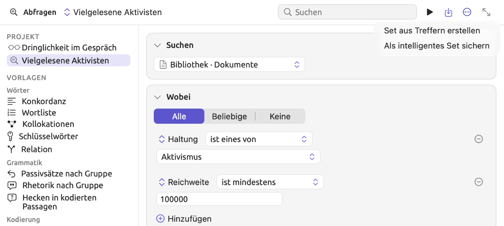
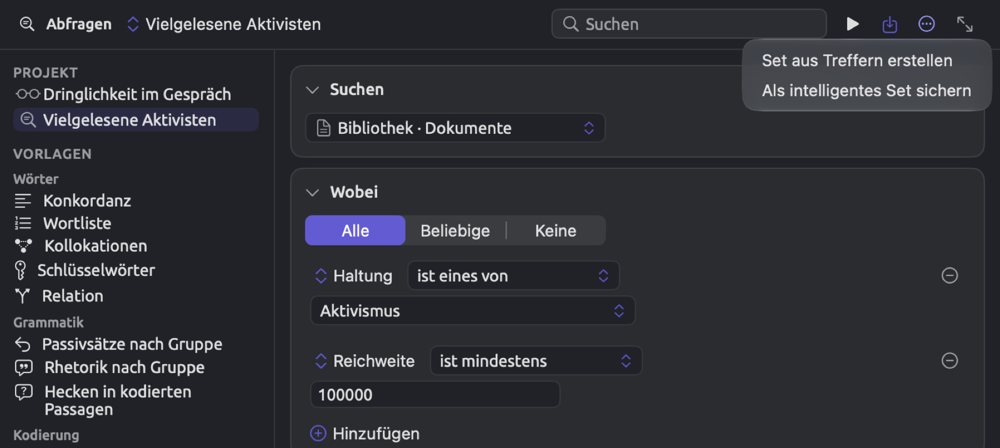
Automatisch kodieren…
Automatisch kodieren… kodiert jede Textstelle, die die Abfrage findet, direkt aus der Abfrage heraus. Das ist nützlich, wenn Sie ein Muster einmal kodieren möchten, in einem Dokument oder in einem ganzen Set, ohne es beim Lesen sehen zu müssen. Der Befehl steht nur im Menü Aktionen der Facette Abfrage eines Dokuments, denn er verwendet den Dialog Automatisch kodieren des geöffneten Dokuments.
Ist „Wörter zur Dringlichkeit“ in der Facette Abfrage des Dokuments „Uns läuft die Zeit davon“ geladen und unter Dokumente das Set „Aktivisten“ gewählt, kodiert ein Durchgang dieses Dialogs jedes Vorkommen der genannten Wörter in den fünf Dokumenten des Sets, die sie verwenden; „Hoffnung braucht Arbeit“ enthält keines davon. Da die beiden Zeilen im Dialog Automatisch kodieren, „Kipppunkte“ und „Fristen“, die Namen vorhandener Codes tragen, sind diese Codes für die Kodierung ausgewählt.


So kodieren Sie mit Automatisch kodieren… aus einer Abfrage heraus:
- Öffnen Sie im Inspektor des Dokuments die Facette Abfrage (Darstellung ▸ Inspektor ▸ Multimodus, dann Abfrage).
- Erstellen Sie die Abfrage, oder laden Sie eine gesicherte aus dem Menü mit dem Namen der Abfrage.
- Öffnen Sie das Menü Aktionen und wählen Sie Automatisch kodieren….
- Im Dialog Automatisch kodieren zeigt die Zeile Abfrage den Namen der Abfrage. Unter Codes hat jede Kategorie der Abfrage eine Zeile; eine Abfrage ohne Kategorien hat eine einzige, nach ihr benannte Zeile. Entfernen Sie das Häkchen bei den Zeilen, die Sie nicht brauchen.
- Wählen Sie für jede Zeile mit Häkchen einen Code, oder behalten Sie Neuer Code: …, um einen Code auf oberster Ebene mit Namen und Farbe der Zeile anzulegen. Dieser Code entsteht nur, wenn der Durchgang für die Zeile eine Textstelle findet. Ein Code, dessen Name mit dem Namen der Zeile übereinstimmt, ist bereits für Sie gewählt; Groß- und Kleinschreibung und Akzente zählen dabei nicht.
- Wählen Sie unter Dokumente den Eintrag Dieses Dokument, eines der Sets des Projekts oder Gesamtes Projekt. Bei Dieses Dokument zeigt Passagen, wie viele Textstellen die Abfrage für die Zeilen mit Häkchen findet.
- Klicken Sie auf Automatisch kodieren. Während des Durchgangs zeigt Fortschritt, wie viele Dokumente fertig sind; Stoppen beendet den Durchgang nach dem aktuellen Dokument.
- Sobald Fortschritt die Zahl der hinzugefügten Kodierungen zeigt, klicken Sie auf Fertig.
Die Schaltfläche Automatisch kodieren ist deaktiviert, solange der Dialog Textstellen lädt (Wird geladen) und solange keine Zeile ausgewählt ist (Nichts ausgewählt).
Wenn Sie Automatisch kodieren von einer Abfrage aus starten, gilt Folgendes:
- LemmaLoom verwendet die Abfrage so, wie sie gerade im Editor steht, gleich ob sie vorher gesichert wurde oder nicht.
- Für ein Set oder das ganze Projekt läuft die Abfrage auf jedem Originaldokument einzeln, als hätten Sie jedes Dokument geöffnet und die Abfrage darin ausgeführt. Übersetzungen werden nur einbezogen, wenn eine davon das aktive Dokument ist; starten Sie in „Uns läuft die Zeit davon (Englisch)“, tritt diese Übersetzung an die Stelle von „Uns läuft die Zeit davon“. Wie beim Kodieren von Hand wird jede erzeugte Kodierung auch in die Übersetzungen des Dokuments übernommen.
- Automatisch kodieren… ist aus denselben Gründen deaktiviert wie Als Lens sichern … (Einzelheiten unter Welche Abfragen Lenses werden können weiter oben).
- Bearbeiten ▸ Automatisch kodieren widerrufen (⌘Z) macht den ganzen Vorgang in einem Schritt rückgängig und entfernt jede Kodierung und jeden Code, die dabei entstanden sind, auch Kodierungen, die vor einem Klick auf Stoppen angelegt wurden.
Das übrige Verhalten beim automatischen Kodieren erklärt Was automatisches Kodieren tut in Kapitel 7, Kodieren.
Set aus Treffern erstellen
Set aus Treffern erstellen legt ein gewöhnliches Set aus allen Dokumenten an, in denen die aktuelle Abfrage Treffer hat. Das Set erhält den Namen der Abfrage und erscheint sofort in der Seitenleiste.
Nehmen Sie eine Abfrage in der Ansicht Abfragen von „Klimadebatte“, gesichert als „Erwähnungen von Zeit“. Sie sucht Sätze, in denen das Lemma Zeit vorkommt. Ihre Treffer liegen in drei Dokumenten, nämlich „Warum wir Straßen blockieren“, „Wissenschaft ist nie abgeschlossen“ und „Radiodebatte“. Aktionen ▸ Set aus Treffern erstellen legt deshalb das Set „Erwähnungen von Zeit“ an, das genau diese drei Dokumente enthält. In „Uns läuft die Zeit davon“ kommt das Lemma Zeit zwar vor, aber nur im Titel, nicht im Text.
Alle Treffer zählen für das Set, auch solche, die Begrenzen oder die Grenze der Bedingung Optionen aus der Liste herausnimmt (siehe Treffer mit Lesezeichen versehen unten). Weil Sets Originale enthalten, kommt bei einem Treffer in einer Übersetzung das Originaldokument in das Set und nicht die Übersetzung; ein Treffer in „Uns läuft die Zeit davon (Englisch)“ fügt „Uns läuft die Zeit davon“ hinzu. Bei einer Abfrage, die Dokumente findet, enthält das Set nur die aufgelisteten Dokumente. Das Set ist eine feste Liste von Dokumenten. Bearbeiten ▸ Neues Set widerrufen entfernt das Set.
Treffer mit Lesezeichen versehen
Treffer mit Lesezeichen versehen … setzt auf alle Treffer der Liste ein Lesezeichen, damit Sie die Textstellen später wiederfinden, zum Beispiel mit der Lens Lesezeichen.
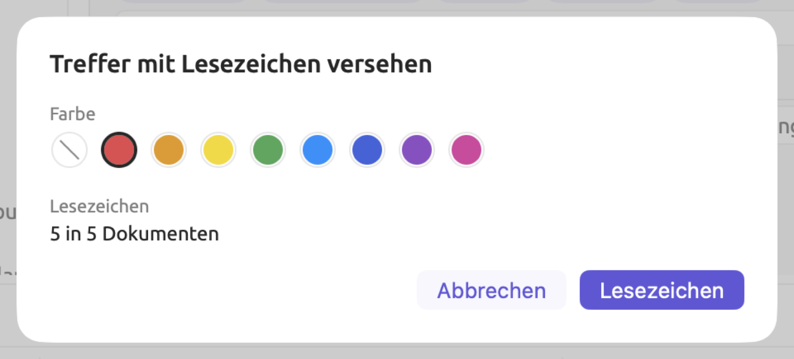
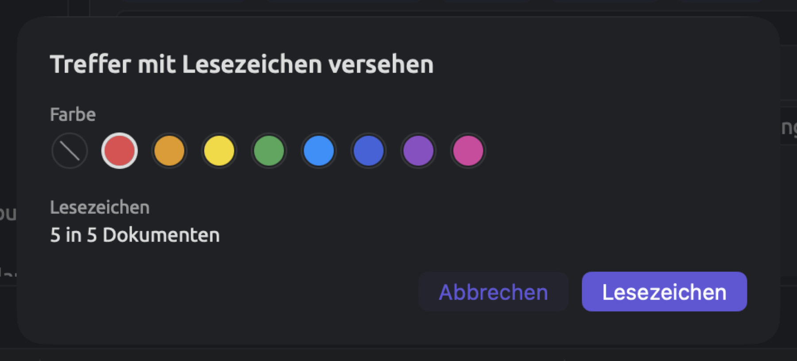
So versehen Sie die Treffer einer Abfrage mit Lesezeichen:
- Führen Sie die Abfrage mit Anzeigen auf Liste aus.
- Öffnen Sie das Menü Aktionen und wählen Sie Treffer mit Lesezeichen versehen ….
- Wählen Sie im Dialog Treffer mit Lesezeichen versehen eine Farbe.
- Prüfen Sie die Zeile Lesezeichen, zum Beispiel 42 in 9 Dokumenten. Sie zählt die neuen Lesezeichen und lässt Treffer aus, die bereits ein Lesezeichen haben.
- Klicken Sie auf Lesezeichen.
Jedes Lesezeichen erhält den Namen der Abfrage als Kommentar.
- Nur die Treffer, die in der Liste stehen, erhalten ein Lesezeichen. Die Liste endet bei der Grenze in der Bedingung Optionen (5.000 Treffer, sofern Sie nichts anderes festlegen) oder früher, wenn Begrenzen in der Bedingung Anzeigen ausgewählt ist. Lautet die Zeile unter der Liste zum Beispiel 5.000 von 6.212 angezeigt, erhöhen Sie die Grenze oder heben die Auswahl von Begrenzen in der Bedingung Anzeigen auf, bevor Sie die Lesezeichen setzen.
- Ein Treffer, der genau dort beginnt und endet, wo ein vorhandenes Lesezeichen beginnt und endet, wird übersprungen, gleich welche Farbe dieses Lesezeichen hat. Trifft das auf alle Treffer zu, ist Lesezeichen mit dem Grund Bereits mit Lesezeichen versehen nicht verfügbar.
- Wie Lesezeichen, die Sie von Hand setzen, erscheinen auch die Lesezeichen aus einer Abfrage automatisch in den anderen Sprachfassungen desselben Dokuments.
- Ein einziges Bearbeiten ▸ Treffer mit Lesezeichen versehen widerrufen entfernt alle neu hinzugefügten Lesezeichen.
Werte einfrieren
Eine Abfrage mit Kollokationen oder Schlüsselwörter liefert Ergebnisse, die nur für die Dokumente gelten, auf denen sie lief. Werte einfrieren macht aus Ihrem Ergebnis dagegen eine feste Wortliste, nach deren Wörtern Sie überall suchen können, wo Sie sie brauchen. Typisch ist etwa, die Wörter zu ermitteln, die zwei Sets von Dokumenten voneinander unterscheiden, und dann das zweite Set nach diesen Wörtern zu durchsuchen.
Im Set „Aktivisten“ von „Klimadebatte“ ist zum Beispiel die Abfrage „Schlüsselwörter: Aktivisten“ gesichert. Sie liefert die Schlüsselwörter, die in den Texten der Aktivisten häufiger vorkommen als in denen der Skeptiker. Frieren Sie diese Liste ein und sichern Sie damit eine neue Abfrage im Projekt, können Sie die neue Abfrage im Set „Skeptiker“ laden und mit einer Anzahl, gruppiert nach Lemma, herausfinden, welche Schlüsselwörter der Aktivisten die Skeptiker verwenden und wie oft.
Wenn Sie Aktionen ▸ Werte einfrieren wählen, geschieht Folgendes:
- Die ersten 200 Zeilen Ihres Ergebnisses werden zu einer eingefrorenen Liste, die nach der ursprünglichen Abfrage benannt ist. Bei Abfragen mit Schlüsselwörter verwendet LemmaLoom nur die Liste Positive Schlüsselwörter, also die Wörter, die das Set häufiger verwendet als seine Referenz. Der Wert jeder Ergebniszeile wird zum Gewicht des jeweiligen Wortes.
- Der Editor enthält danach eine neue, ungesicherte Abfrage. Sie sucht Wörter mit der Regel Lemma ist eines von und der eingefrorenen Liste als Wert; je nachdem, was Ihre bisherige Abfrage gezählt hat, prüft die Regel stattdessen Wort oder Wortklasse.
- Die neue Abfrage übernimmt den Namen der eingefrorenen Abfrage. Obwohl sie denselben Namen trägt, ist sie eine völlig eigenständige Abfrage. Sichern fragt nach einem Namen.
- Bearbeiten ▸ Werte einfrieren widerrufen stellt die alte Abfrage samt ihren ungesicherten Änderungen wieder her.
- Ändern Sie Wörter in der neuen Regel, wird daraus eine gewöhnliche Liste ohne Gewichte.
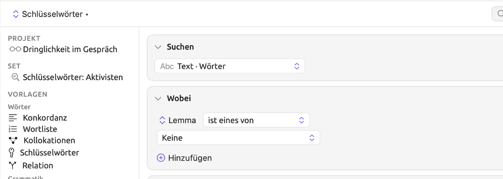

In einer Ansicht Abfragen oder im Abfragen-Fenster können Sie beide Listen nebeneinander sehen, während Sie mit der eingefrorenen Liste arbeiten. Klicken Sie dazu vor dem Einfrieren rechts in der Ergebnisleiste auf Ergebnisse in einem Fenster öffnen. (Siehe Ergebnisse in einem Fenster in Kapitel 16, Abfrageergebnisse und Statistik.)
So suchen Sie an anderer Stelle nach den Wörtern der eingefrorenen Liste:
- Führen Sie die Abfrage mit Kollokationen oder Schlüsselwörter aus und prüfen Sie ihre Liste.
- Öffnen Sie das Menü Aktionen und wählen Sie Werte einfrieren. Der Editor enthält jetzt eine Abfrage, die die aufgelisteten Wörter sucht.
- Öffnen Sie das Menü Sichern, wählen Sie Sichern unter … und geben Sie der Abfrage einen Namen. Stellen Sie Verfügbar in auf einen Bereich, der die Dokumente einschließt, die Sie durchsuchen möchten; um die Abfrage in einem anderen Set zu laden, wählen Sie Projekt.
- Öffnen Sie die Ansicht Abfragen, in der Sie suchen möchten, und laden Sie die Abfrage aus dem Menü mit dem Namen der Abfrage oder aus der linken Spalte.
- Stellen Sie Anzeigen auf das, was Sie sehen möchten, etwa auf Anzahl mit einem Schlüssel Lemma unter Gruppieren nach; das zeigt, wie oft jedes eingefrorene Wort vorkommt.
Eine Anzahl im Set „Skeptiker“ liefert absolute Häufigkeiten. Da sich die Texte der Skeptiker in Zahl und Länge von denen der Aktivisten unterscheiden, sollte eine Rate diesen Unterschied ausgleichen. Für eine Rate, die sich mit den Ergebnissen derselben Abfrage im Set „Aktivisten“ vergleichen lässt, wählen Sie deshalb im Menü, das Treffer zeigt, den Eintrag Pro 10.000 Wörter (siehe Maße in Kapitel 16, Abfrageergebnisse und Statistik).
Die Abfrage mit der eingefrorenen Liste kann ihre Ergebnisse nach Wert sortieren und ordnet die Textstellen dann nach dem Gewicht der Wörter aus der eingefrorenen Liste (siehe Passagen wie ein Code in Kapitel 17, Abfragemuster und Erkundung). Für eine Lens muss die Sortierung allerdings auf etwas anderem als Wert stehen.
Zum Wörterbuch hinzufügen
Zum Wörterbuch hinzufügen nimmt die Wörter eines Ergebnisses in eine Kategorie eines der Wörterbücher Ihres Projekts auf. Verwenden Sie den Befehl, wenn eine Häufigkeits-, Kollokations- oder Schlüsselwortliste die Wörter enthält, die in diese Kategorie gehören sollen.
In „Klimadebatte“ enthält die Kategorie „Approximatoren“ des Wörterbuchs „Heckenausdrücke“ Wörter, die Mengen oder Zahlen annähernd angeben, nämlich etwa, ungefähr, rund, knapp, fast, beinahe, so gut wie, mehr oder weniger und annähernd. Weitere Wörter wie oft, meist und größtenteils schwächen eine Aussage ähnlich ab, ohne unbedingt Mengen oder Zahlen zu betreffen. In manchen Studien gelten oft, meist und größtenteils sogar als Approximatoren.
Welche dieser Wörter in den Dokumenten vorkommen, zeigt eine Abfrage in der Ansicht Abfragen des Projekts. Sie sucht Wörter, deren Lemma etwa, ungefähr, rund, oft, meist, größtenteils oder gelegentlich ist, mit Anzeigen auf Anzahl und einem Schlüssel unter Gruppieren nach, wiederum Lemma. Das Ergebnis hat sechs Zeilen, nämlich etwa 9-mal, oft 6-mal, rund 6-mal, ungefähr 5-mal, meist 4-mal und größtenteils einmal. Mit Aktionen ▸ Zum Wörterbuch hinzufügen ▸ „Heckenausdrücke“ ▸ „Approximatoren“ kamen die drei Wörter größtenteils, meist und oft hinzu; die anderen drei standen bereits in der Kategorie.
Die Zahl für rund umfasst nach einer runden, ehrgeizigen Zahl im Dokument „Netto-Null wird teuer“ ebenso wie um rund 11 Cent teurer im Dokument „Streit um die CO2-Steuer“. Die Zahl der Vorkommen verrät wenig darüber, wie ein Wort verwendet wird; sehen Sie sich deshalb einige Treffer an, bevor Sie Wörter in eine Kategorie aufnehmen.
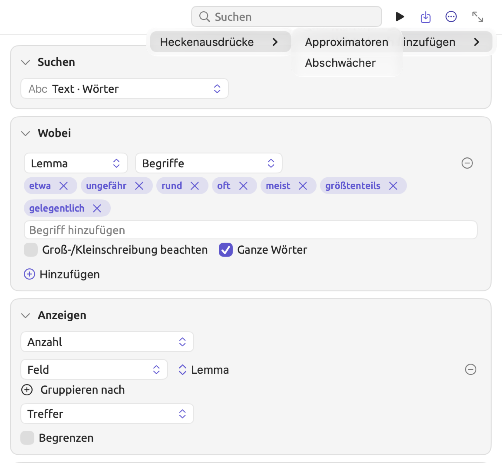
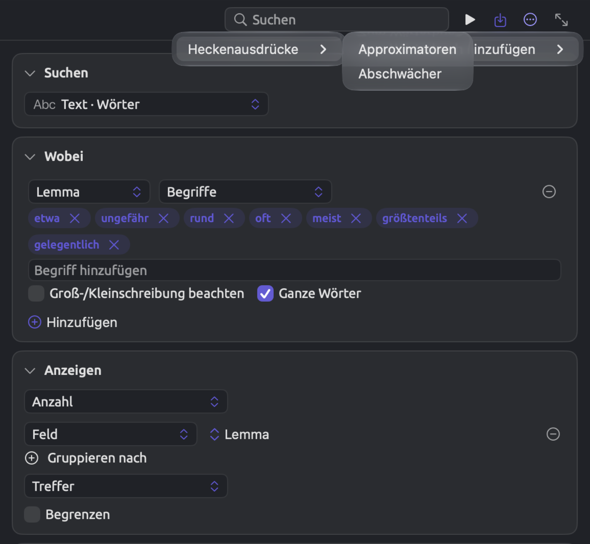
So nehmen Sie die Wörter eines Ergebnisses in ein Wörterbuch auf:
- Führen Sie die Abfrage aus.
- Öffnen Sie das Menü Aktionen und wählen Sie Zum Wörterbuch hinzufügen.
- Wählen Sie im Untermenü das Wörterbuch und dann die Kategorie.
Sobald Sie die Kategorie wählen, werden die Begriffe aufgenommen.
- Aufgenommen wird die Beschriftung jeder Zeile, höchstens für die ersten 200 Zeilen. Bei Schlüsselwörter nimmt LemmaLoom nur die Liste Positive Schlüsselwörter auf. Möchten Sie aus einer Anzahl nicht alle Zeilen übernehmen, setzen Sie vorher in der Bedingung Anzeigen ein Häkchen bei Begrenzen und wählen einen Wert.
- Ein Begriff, der bereits in der Kategorie steht, wird übersprungen; beim Vergleich zählt Groß- und Kleinschreibung nicht. Die Kategorie bleibt alphabetisch sortiert.
- Aufgeführt werden nur die Wörterbücher des Projekts, zu dem die Abfrage gehört. Hat das Projekt kein Wörterbuch, ist der Befehl ausgeblendet (siehe Ein Wörterbuch anlegen in Kapitel 19, Wörterbücher).
- Bearbeiten ▸ Zum Wörterbuch hinzufügen widerrufen entfernt alle hinzugefügten Begriffe in einem Schritt.
Möchten Sie nur einige Begriffe aufnehmen oder auch Begriffe, die nicht in Ihren Ergebnissen stehen, kopieren Sie sie in das Feld Begriff hinzufügen der Kategorie in der Ansicht Wörterbücher des Projekts, jeden Begriff in eine eigene Zeile (siehe Begriffe hinzufügen und entfernen in Kapitel 19, Wörterbücher).
Warum ein Befehl nicht verfügbar ist
Ist Als Lens sichern …, Als Analysator sichern … oder Automatisch kodieren… deaktiviert, nennt der Befehl den Grund, wenn Sie den Mauszeiger darauf halten. Es erscheint immer nur ein Grund, auch wenn mehrere zutreffen; haben Sie ihn behoben, kann der nächste erscheinen. Die ersten sechs Gründe in der Tabelle sperren alle drei Befehle, die übrigen nur Als Analysator sichern ….
| Grund | Bedeutung | Was Sie ändern |
|---|---|---|
| Keine Liste | Anzeigen steht nicht auf Liste. | Stellen Sie Anzeigen auf Liste. |
| Keine Passagen | Suchen ist auf Dokumente, Codes, Sets oder ein anderes Objekt der Bibliothek eingestellt, und diese haben keinen Ort im Text. | Suchen Sie stattdessen eine Art von Textstelle. |
| Gepaarte Ergebnisse | Suchen steht auf Verknüpfungen oder Zuordnungen; jeder Treffer verbindet zwei Stellen. | Suchen Sie eine Art von Textstelle, die an einem einzigen Ort liegt. |
| Bewertete Liste | Die Liste ist nach Wert sortiert. | Wählen Sie eine andere Sortierung. |
| Mehr als 16 Kategorien | Die Bedingung Kategorien hat mehr als 16 Kategorien. | Führen Sie Kategorien zusammen oder entfernen Sie einige. |
| Unvollständig | Eine Regel ist unfertig, oder etwas anderes hindert die Abfrage daran, zu laufen. | Vervollständigen Sie die Abfrage; der Ergebnisbereich nennt, was sie aufhält. |
| Verwendet Analysatorbefunde | Suchen steht auf Befunde, oder eine Regel bezieht sich auf Befunde. | Behalten Sie die Abfrage als Lens. |
| Verwendet Rohtext | Suchen steht auf Texttreffer oder Absätze; eine Textzeile vergleicht über Text oder verwendet Regulärer Ausdruck; oder eine Regel prüft den Absatz oder Text oder Länge der Textstelle. | Vergleichen Sie über Wort, Wortform oder Lemma, mit Begriffe oder einem Wörterbuch. |
| Verwendet Medien | Suchen steht auf Redebeiträge, oder eine Regel verwendet Im selben Redebeitrag wie. | Behalten Sie die Abfrage als Lens. |
| Verwendet Übersetzungen | Eine Regel verwendet Übersetzt als. | Behalten Sie die Abfrage als Lens. |
| Verwendet Kodierungen oder Memos | Suchen steht auf Kodierungen, Memos oder Lesezeichen; eine Regel prüft eine Kodierung, ein Memo, ein Lesezeichen oder eine Verknüpfung oder verwendet Verknüpft mit; eine Relation verweist auf etwas anderes als Wörter, Sätze, Phrasen, Nominalgruppen oder Befunde; oder die Abfrage hat eine Zeile mit Hat. | Behalten Sie die Abfrage als Lens. |
| Verwendet Dokumentfelder | Eine Regel prüft eine Eigenschaft oder ein Attribut des Dokuments, etwa Titel, Sprache oder das Attribut „Haltung“. | Entfernen Sie die Regel, oder grenzen Sie die Abfrage stattdessen über ihren Geltungsbereich ein. |
| Verwendet „Färben nach“ | Die Bedingung Kategorien verwendet Färben nach. | Legen Sie die Kategorien stattdessen über Regeln fest. |
| Verwendet Felder nur für die Leseansicht | Eine Regel verwendet Negator, Im Negationsbereich, Konnektiv, Modalität, Topologisches Feld oder Partikel. | Behalten Sie die Abfrage als Lens. |
| Satzübergreifend | Eine Regel verwendet In der Nähe von, Vor, Nach oder Im selben Absatz wie. | Verwenden Sie Im selben Satz wie, oder behalten Sie die Abfrage als Lens. |
Ein weiterer Grund, Nicht auf Wortebene, kommt nur im Dialog Als Analysator sichern vor. Er bedeutet, dass die Abfrage zwar die Prüfungen oben besteht, sich Teile von ihr aber nicht in ein Skript übertragen lassen. Behalten Sie die Abfrage als Lens.
Abfragen in LemmaLoom-Archiven
Das Archivformat von LemmaLoom (.llz) enthält Ihre gesicherten Abfragen zusammen mit den indizierten Dokumenten und ihren Codes (siehe Kapitel 22, Austausch und Export). Welche Abfragen enthalten sind, hängt davon ab, was Sie exportieren:
| Export | Enthaltene Abfragen |
|---|---|
| Ablage ▸ Exportieren ▸ LemmaLoom-Projekt | jede Abfrage, die für das Projekt, für eines seiner Sets oder für eines seiner Dokumente gesichert ist |
| Ablage ▸ Exportieren ▸ LemmaLoom-Set oder Exportieren im Kontextmenü eines Sets | Abfragen, die für das Projekt, für dieses Set und für die Dokumente darin gesichert sind |
| Ablage ▸ Exportieren ▸ LemmaLoom-Dokument (bei mehreren LemmaLoom-Dokumente) oder Exportieren im Kontextmenü ausgewählter Dokumente | Abfragen, die für das Projekt und für diese Dokumente gesichert sind |
Abfragen, die für Alle Projekte gesichert sind, lässt ein Archiv aus. Ist eine Abfrage eine Lens, bleibt sie das auch nach dem Import.
Ein Archiv enthält jeden Analysator, dessen Befunde mit Ihren exportierten Dokumenten gespeichert sind. Außerdem enthält es jeden Analysator, den eine enthaltene Abfrage mit Befunde durchsucht, und jeden Analysator, der aus den enthaltenen Abfragen selbst erzeugt wurde. Befunde werden immer zusammen mit ihrem Dokument importiert.
Beim Import eines Archivs mit Ablage ▸ Importieren ▸ LemmaLoom-Archiv geschieht Folgendes:
- Codes, Sets und andere Objekte, auf die sich Abfragen beziehen, werden ihren importierten Gegenstücken zugeordnet.
- Eine Abfrage eines Sets oder Dokuments, das nicht im Archiv enthalten ist, wird zu einer Abfrage des Projekts.
- Analysatoren gehören zu keinem bestimmten Projekt. Importieren Sie einen Analysator, den Sie bereits haben, etwa weil Sie das Archiv selbst exportiert haben, verwendet LemmaLoom Ihr Exemplar mit allen Änderungen, die Sie seither vorgenommen haben, und überspringt das Exemplar aus dem Archiv. Andernfalls wird der Analysator importiert, und ein Analysator, der aus einer importierten Abfrage erzeugt wurde, bleibt mit ihr verknüpft. Vergleicht die Abfrage Wörter mit einem Wörterbuch, zeigt der Analysator Veraltet, denn die Abfrage verweist jetzt auf eine andere Kopie des Wörterbuchs oder auf gar keines.
- Verweise auf Objekte, die nicht zum Archiv gehören, entfallen. Wörterbücher, andere Sets und Code-Sets sind nur in einem Projektarchiv enthalten, nie im Archiv eines Sets oder von Dokumenten; bei Abfragen aus solchen Archiven müssen Sie deshalb unter Umständen ein Wörterbuch oder Set erneut wählen.